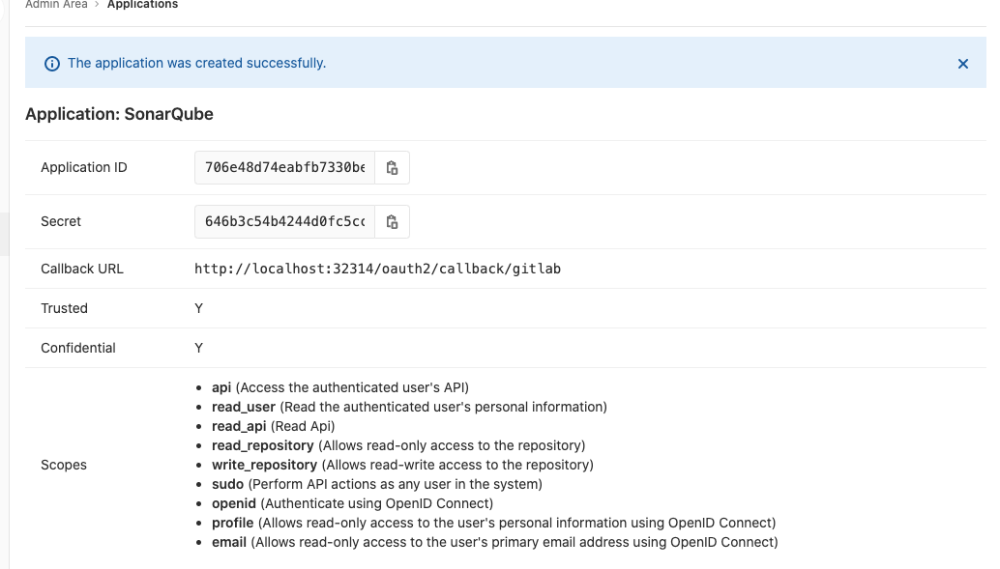

第二节 SonarQube：持续代码质量检查
SonarQube是一个代码质量管理工具，能对20多种编程语言源码进行代码味道（Code Smells)、Bugs 、安全漏洞方面的静态分析。SonarQube有4个版本：开源版、开发者版、企业版、数据中心版（Data Center Edition）。
https://www.sonarsource.com/plans-and-pricing/

1、安装sonarqube (helm)
- https://hub.helm.sh/charts/oteemo/sonarqube
$ kuebctl create ns sonarqube
$ helm repo add oteemocharts https://oteemo.github.io/charts
"oteemocharts" has been added to your repositories
$ helm install sonarqube oteemocharts/sonarqube -n sonarqube -f values.yaml
NAME: sonarqube
LAST DEPLOYED: Thu Jul 30 13:33:06 2020
NAMESPACE: sonarqube
STATUS: deployed
REVISION: 1
NOTES:
1. Get the application URL by running these commands:
export POD_NAME=$(kubectl get pods --namespace sonarqube -l "app=sonarqube,release=sonarqube" -o jsonpath="{.items[0].metadata.name}")
echo "Visit http://127.0.0.1:8080 to use your application"
kubectl port-forward $POD_NAME 8080:9000
$ kubectl port-forward svc/sonarqube-sonarqube 9000:9000 -n sonarqube
Forwarding from 127.0.0.1:9000 -> 9000
Forwarding from [::1]:9000 -> 9000
Handling connection for 9000
admin
admin
values.yaml
- https://github.com/helm/charts/blob/master/stable/sonarqube/values.yaml
service:
type: NodePort
$ helm upgrade sonarqube oteemocharts/sonarqube -n sonarqube -f values.yaml
Release "sonarqube" has been upgraded. Happy Helming!
NAME: sonarqube
LAST DEPLOYED: Fri Jul 31 14:09:20 2020
NAMESPACE: sonarqube
STATUS: deployed
REVISION: 4
NOTES:
1. Get the application URL by running these commands:
export NODE_PORT=$(kubectl get --namespace sonarqube -o jsonpath="{.spec.ports[0].nodePort}" services sonarqube-sonarqube)
export NODE_IP=$(kubectl get nodes --namespace sonarqube -o jsonpath="{.items[0].status.addresses[0].address}")
echo http://$NODE_IP:$NODE_PORT
$ kubectl get svc -n sonarqube
NAME TYPE CLUSTER-IP EXTERNAL-IP PORT(S) AGE
sonarqube-postgresql ClusterIP 10.106.235.197 <none> 5432/TCP 22h
sonarqube-postgresql-headless ClusterIP None <none> 5432/TCP 22h
sonarqube-sonarqube NodePort 10.101.144.173 <none> 9000:32314/TCP 22h

2、Maven与SonarQube集成
2-1 Maven与SonarQube集成
<plugin>
<groupId>org.codehaus.mojo</groupId>
<artifactId>sonar—maven—plugin</artifactId>
<version>3.4.1.1168</version>
</plugin>
执行命令
mvn clean org.sonarsource.scanner.maven:sonar-maven-plugin:3.4.1.1168:sonar -Dsonar.host.url=http://192.168.33.1:32324
#!groovy
@Library('jenkinslib@master') _
def build = new org.devops.buildtools()
pipeline {
agent { node { label "hostmachine" }}
parameters {
string(name: 'srcUrl', defaultValue: 'http://192.168.33.1:30088/root/demo-maven-service.git', description: '')
choice(name: 'branchName', choices: 'sonarqube\nmaster', description: 'Please chose your branch')
choice(name: 'buildType', choices: 'mvn', description: 'build tool')
choice(name: 'buildShell', choices: 'clean package -DskipTest\n--version', description: 'build tool')
}
stages{
stage('Checkout') {
steps {
script {
checkout([$class: 'GitSCM', branches: [[name: "${branchName}"]], doGenerateSubmoduleConfigurations: false, extensions: [], submoduleCfg: [], userRemoteConfigs: [[credentialsId: 'gitlab-admin-user', url: "${srcUrl}"]]])
}
}
}
stage('sonarqube test') {
steps {
script{
mvnHome = tool "m2"
sh "${mvnHome}/bin/mvn clean org.sonarsource.scanner.maven:sonar-maven-plugin:3.4.1.1168:sonar -Dsonar.host.url=http://192.168.33.1:32314"
}
}
}
}
}
sonar.host.ur参数用于指定SonarQube服务的地址这时，就可以在SonarQube的Projects中看到结果

+ /opt/maven/bin/mvn clean org.sonarsource.scanner.maven:sonar-maven-plugin:3.4.1.1168:sonar -Dsonar.host.url=http://192.168.33.1:32314
[INFO] Scanning for projects...
Downloading from central:
...
[INFO] User cache: /home/vagrant/.sonar/cache
[INFO] SonarQube version: 8.2.0
[INFO] Default locale: "en_US", source code encoding: "UTF-8" (analysis is platform dependent)
[WARNING] SonarScanner will require Java 11 to run starting in SonarQube 8.x
[INFO] Load global settings
[INFO] Load global settings (done) | time=165ms
[INFO] Server id: EA8D9556-AXOeledPvj9r7r4MIG91
[INFO] User cache: /home/vagrant/.sonar/cache
[INFO] Load/download plugins
[INFO] Load plugins index
[INFO] Load plugins index (done) | time=62ms
...
SonarQube服务默认允许任何人执行源码分析，因此在生产环境中使用会有安全隐患。以下几步可以提高其安全性：
- (1）设置SonarQube禁止非登录用户使用
- (2）为用户生成
Token,Jenkins只能通过Token与SonarQube集成。登录SonarQube，进入个人设置页而中的Security tab页/account/security/

-
10e7097178d25c86c1056d33024870caf5f01bc9 -
(3）在执行mvn命令时加入相应的
sonar.login参数。
mvn clean org.sonarsource.scanner.maven:sonar-maven-plugin:3.4.1.1168:sonar -Dsonar.host.url=http://192.168.33.1:32314 -Dsonar.login=10e7097178d25c86c1056d33024870caf5f01bc9
2.2 Jenkins与SonarQube集成
我们将Maven与SonarQube集成。这时，SonarQube对于Jenkins来说还是很明确的，Jenkins并不知道代码质量如何。本节我们将集成Jenkins与SonarQube,以实现当代码 量不合格时，Jenkins pipeline失败。
具体步骤如下：
-
(1)
Jenkins：安装SonarQube Scanner插件（https://plugins.jenkins.io/sonar) -
(2)
Jenkins：配置SonarQube Scanner插件，
- (3)
SonarQube：设置Webhooks。不同代码规模的源妈分析过程的耗时是不一样的。所以 当分析完成11寸由SonarQube主动通知Jenkins设置方法就是进人SonarQube的Adminstration -> Configuration -> Webhooks页加人＜Jenkins的地址＞/sonarqube-webhook
https://192.168.33.11:8080/sonarqube-webhook
<Jenkins的地址＞/sonarqube-webhook/接口由 Jenkiins SonaQube插件提供
- (4）在
JerkrnsfiIe中加入SonarQube的stage
stage('sonarqube test') {
steps {
withSonarQubeEnv('sonarqube') {
script{
mvnHome = tool "m2"
sh "${mvnHome}/bin/mvn clean org.sonarsource.scanner.maven:sonar-maven-plugin:3.4.1.1168:sonar -Dsonar.host.url=http://192.168.33.1:32314"
}
}
}
}
stage('Quality Gate') {
steps {
timeout(time: 1, unit: 'HOURS') {
waitForQualityGate abortPipeline: true
}
}
}
-
withSonarQubeEnv是一个环境变量包装器，读取的是我们在所配置的变量。在它的闭包内，我们可以使用以下变量。 -
SONAR_HOST_URL:SonarQube服务的地址。 SONAR_AUTH_TOKEN:SonarQube认证所需要的Token
waitForQualityGate步骤告诉Jenkins等待SonarQube返回的分析结果。当它的 abortPipeline参数为true时，代表当质量不合格时，将pipeline的状态设置为UNSTABLE
我们同时使用了timeout包装器来设置waitForQualityGate步骤的超时时间，避免当网络出问题时，Jenkins任务一直处于等待状态。
- (5）设置
Quality Gates（质量阈值）。在SonarQube的“Quality Gates”下，我们可以看到系统自带的质量，阈值。可以看出它是针对新代码的。所以，在初次及没有新代码加入的情况下，执行代码分析是不会报出构建失败的。
3 使用SonarQube Scanner实现代码扫描
上文中，我们是使用Maven插件实现代码扫描的，也就是利用构建工具本身提供的插件来实现。在构建工具本身不支持的情况下，我们使用SonarQube本身提供的扫描工具（Scanner）进行代码扫描。
具体步骤如下：
- (1)在安装
SonarQube Scanner：插件后，设置扫描工具自动下载并安装（推荐)。configureTools -> SonarQube Scanner)

请注意，这里的Name值与所设置的值是两码事。此处设置的是SonarScanner工具本身的名称与路径
- (2）在代码项目根目录下放人
sonar-project.properties文件sonar-scanner会读取其配置内容如下：
# must be unique in a given SonarQube instance
sonar.projectKey=my:project
# this is the name and version displayed in the SonarQube UI. Was mandatory prior to SonarQube 6.1.
sonar.projectName=My project
sonar.projectVersion=1.0
# This property is optional if Sonar.modules is set.
sonar.sources=.
# Encoding of the source code. Default is default system encoding
# sonar.sourceEncoding=UTE—8
- (3)
pipeline部分代码如下
script{
def sonarHome = tool name: 'sonarqube4.2.0', type: 'hudson.plusinS.sonar.SonarRunnerInstallation'
withSomarQubeEnv('sonar') {
sh "${sonarHome}/bin/sonar—scanner —Dsonar.host.url=${SONAR_HOST_URL} —Dsonar.login=${SONAR_AUTH_TOKEN}"
}
}
4 将分析报告推送到GitLab
如果希望对每一次代码的commit都进行分析，并将分析结果与该commit关联起来，那么SonarQube的GitLab插件就是一个不错的选择。SonarQube GitLab插件的功能就是将SonarQube 的分析结果推送到GitLab
- (1）在
SonarQube上安装GitLab插件
https://github.com/helm/charts/blob/master/stable/sonarqube/values.yaml
image:
repository: sonarqube
tag: 8.4.1-community
service:
type: NodePort
plugins:
intsalls:
- https://github.com/gabrie-allaigre/sonar-gitlab-plugin/releases/download/4.1.0-SNAPSHOT/sonar-gitlab-plugin-4.1.0-SNAPSHOT.jar
$ helm upgrade sonarqube oteemocharts/sonarqube -n sonarqube -f values.yaml
admin/settings?category=almintegration

gitlab part
admin/applications
- http://localhost:32314/oauth2/callback/gitlab
- Application ID: 706e48d74eabfb7330beaf747732182833ceb79fa43ac180e248a4b77f55cfed
- Secret: 646b3c54b4244d0fc5ccf8cf906728c2818a60e285675186dd731b21a189c0c8

配置好sonarQube GitLab插件后，需要为sonar-scanner添加几个参数，以告诉SonarQube
将分析结果关联GitLab的相应commit上。
script{
def sonarHome = tool name: 'sonarqube3.2.0', type: 'hudson.plugins.sonar.SonarRunnerInstallation'
def GIT_COMMIT_ID = sh(
script: "git rev—parse ——short=10 HEAD",
returnStdout: true
)
sh "${sonarHome}/bin/sonar—scanner —Dsonar.host.url=${SONAR_HOST_URL} —Dsonar.analysis.mode=preview —Dsonar.gitlab.ref_name=master-Dsonar.gitlab.project_id=jenkins—book/sonarqube —Dsonar.projectName=jenkins—book—Dsonar.gitlab.commit_sha=${GIT_COMMIT_ID} —Dsonar.login=${SONAR_AUTH_TOKEN}"
}
首先通过sh步骤获取代码的commitID，然后在执行扫描时加人如下参数.
-Dsonar.analysis.mode：分析报告模式，值为preview，代表将结果推送到GitLab。此参数虽 然官方标注SonarQube 6.6后被废弃.-Dsonar.gitlab.ref_name：分支名称。-Dsonar.gitlab.project_id:GitLab对一应的项目路径。Dsonar.projectName：对应SonarQube上的项目名称。-Dsonar.gitlab.comit_sha：代码的commitID
当SonarQube分析完成后，我们就可以在GitLab的相应Commit页面上的代码行内或commit评论区看到分析结果了